I semafori sono potenti ma di basso livello: il professore sottolinea che sono espressivi e permettono di risolvere qualsiasi problema di interazione, ma il loro uso non e banale perche sono un meccanismo comunque di basso livello, facile da sbagliare — programmi soggetti a errori, difficili da usare in programmi concorrenti complessi. Da qui nasce l'esigenza di costrutti di piu alto livello: i Monitor, introdotti da Brinch Hansen (1973) e generalizzati da Tony Hoare (1974).

I monitor sono l'evoluzione naturale dei semafori: un modulo che incapsula l'accesso concorrente a uno stato condiviso, fornendo mutua esclusione intrinseca (le procedure vengono eseguite in mutua esclusione, al massimo un processo attivo per volta) e sincronizzazione esplicita tramite variabili di condizione che permettono di sospendere e risvegliare i processi.
Un Monitor e un'astrazione di dati per la programmazione concorrente che incapsula in un'unica entita:
monitor MonitorName {
// variabili permanenti (stato privato)
// codice di inizializzazione
procedure (o entry) NomeOp(params) {
// corpo
}
}Il professore nota che il monitor e una generalizzazione del concetto di kernel dei sistemi operativi: invece di avere un unico kernel centralizzato che gestisce tutte le sezioni critiche, ogni monitor e un "mini-kernel" decentralizzato specializzato per un dato condiviso. E anche una generalizzazione del concetto di oggetto nella OOP: come un modulo OOP che incapsula dati + operazioni + politica di sincronizzazione/mutua esclusione, includendo il costrutto di base per garantire la correttezza dell'accesso concorrente.
Un monitor e un data type astratto che incapsula stato, operazioni e politica di sincronizzazione. E come un modulo (o un oggetto) che fornisce intrinsecamente mutua esclusione su tutti i suoi metodi.
L'esempio piu semplice e un contatore thread-safe:
monitor Counter {
int count := 0;
procedure inc() {
count := count + 1
}
procedure getValue(): int {
return count
}
}L'esempio del contatore mostra la potenza dell'astrazione: non c'e alcun wait/signal esplicito per la mutua esclusione. Se due processi chiamano inc() contemporaneamente, il monitor garantisce l'atomicita: due thread non eseguiranno mai inc() nello stesso momento. Il docente sottolinea che la mutua esclusione e implicita, fornita dall'implementazione del monitor: questo incremento non rilascia il monitor e non può interlecciarsi con un altro incremento protetto dallo stesso lock. Una procedura che esegue wait, invece, rilascia il lock durante l’attesa: non è un’unica azione atomica dall’ingresso al ritorno.
La sola mutua esclusione non basta: serve anche la sincronizzazione. Le variabili condizione (condition variables) sono un tipo di dato primitivo che i monitor mettono a disposizione per la sincronizzazione esplicita: permettono di sospendere (waitC) e risvegliare (signalC) processi all'interno di un monitor, rappresentando condizioni (eventi) sullo stato del monitor in attesa di essere soddisfatte. Nell’astrazione classica delle slide si assume una coda FIFO per condizione. Non è una proprietà universale: Object.wait usa un wait set senza selezione FIFO garantita; le Condition di ReentrantLock documentano la propria politica. La variabile condizione non è il predicato booleano e non conserva notifiche per futuri waiter.

| Operazione | Comportamento |
|---|---|
waitC(cond) | Sospende il processo chiamante e rilascia il lock del monitor (fondamentale: senza questo rilascio, nessun altro processo potrebbe entrare per cambiare lo stato). Il processo viene aggiunto alla coda della condizione. |
signalC(cond) | Se la coda non e vuota, sblocca il primo processo in attesa (lo porta a ready); se la coda e vuota, non ha effetto |
emptyC(cond) | Verifica se la coda della condizione e vuota |
signalAllC(cond) | Sblocca tutti i processi in attesa sulla condizione (utile quando non si sa quale risvegliera) |
waitC(cond, rank) | Attesa con priorita: il processo viene inserito in coda in ordine crescente di rank |
minrank(cond) | Restituisce il rank del processo in testa alla coda |
Schema astratto FIFO con signal-and-continue, senza timeout o cancellazione; la riacquisizione del lock dopo l’attesa è parte dell’operazione:
waitC(cond) = < append p to cond.queue
p.state := blocked
monitor.lock := release >
attendi il risveglio
riacquisisci monitor.lock prima di ritornare
signalC(cond) = < if cond.queue != empty
q := remove head of cond.queue
q.state := ready >
waitC rilascia il lock del monitor (altrimenti nessun altro processo potrebbe entrare per cambiare lo stato e risvegliarlo). Nel modello FIFO delle slide signalC seleziona la testa; la disciplina di segnalazione stabilisce quando potrà eseguire. Non è un semaforo che accumula permessi. A differenza di signal su semaforo — che rende disponibile o assegna un permesso — signalC non ha effetto se la coda e vuota.
Una cella persistente dell’ultimo valore: get attende la prima scrittura ma non consuma il dato; set può sovrascriverlo. Non è un buffer a posto singolo che impone alternanza produttore-consumatore:
monitor SynchCell {
int value;
boolean available := false;
cond isAvail;
procedure set(int v) {
value := v
available := true
signalAllC(isAvail)
}
procedure get(): int {
while (!available)
waitC(isAvail)
return value
}
}get attende finché available è falso. set scrive il dato, rende vero available e segnala tutti i lettori: ciascuno può restituire il valore corrente senza azzerare available. Ulteriori set possono sovrascriverlo. Il rilascio del lock durante wait permette allo scrittore di entrare.
Qui serve risvegliare tutti i lettori già in attesa: la disponibilità è persistente e non è garantita una successiva scrittura. Una sola signal potrebbe lasciarne sospesi alcuni nonostante il predicato vero.
Quando un processo esegue una signalC, sia il signaller che il signalled potrebbero essere pronti a proseguire nel monitor, ma solo uno puo avere accesso esclusivo: si pone il problema di chi debba continuare, il processo che segnala o quello che viene risvegliato? Le tre discipline classiche differiscono per l'ordine di priorita tra signaller (S), waiting (W — processi in attesa sulla condizione) ed external processes (E — processi bloccati sull'entry del monitor):
Signal and Continue (nonpreemptive): il processo che segnala continua l'esecuzione; il processo risvegliato eseguira in un momento successivo, quando potra riacquisire il lock del monitor, competendo con gli altri processi. Precedenze: E < W < S (processi bloccati sull'entry < processi in attesa sulla condizione < processo che segnala). E la disciplina piu comune (usata da Java, per esempio — che adotta pero la variante E = W < S).
Signal and Wait (preemptive): il processo risvegliato viene eseguito immediatamente; il processo che ha segnalato si mette in attesa, competendo ad armi pari con i processi esterni (E) per il lock. Precedenze: E = S < W — i risvegliati hanno priorita massima.
Signal and Urgent Wait (Immediate Resumption Requirement): come Signal and Wait, ma il processo che ha segnalato ha priorita rispetto ai processi in attesa sul lock del monitor quando puo riprendere. Precedenze: E < S < W. E la disciplina classica per i monitor nella letteratura originale, quella definita da Hoare.
In forma tabellare compatta:
| Disciplina | Ordine di precedenza | Comportamento |
|---|---|---|
| Signal & Continue | E < W < S | Il segnalante continua; in questa variante W precede E |
| Signal & Wait | E = S < W | Il risvegliato esegue subito; il segnalante aspetta |
| Signal & Urgent Wait | E < S < W | Il risvegliato esegue subito; il segnalante ha priorita sugli altri in attesa del lock |
Legenda: S = segnalante sospeso o attivo, W = waiter selezionato dalla signal, E = chiamanti in ingresso. Le disuguaglianze indicano precedenza, non probabilità o equità dello scheduler. Java non promette che W preceda E.
Con signal-and-continue bisogna usare while (!B): il waiter può riacquisire il lock quando B è di nuovo falso perché un altro processo ha modificato lo stato. Questo è diverso da un risveglio spurio, che avviene senza la notifica prevista. Con handoff immediato, if è giustificabile solo se chi segnala garantisce B, nessun terzo interviene e l’attesa non ha altre cause di ritorno; il solo nome della disciplina non dimostra queste ipotesi.
// Handoff immediato, signal garantisce B, nessun ritorno spurio:
if (!B) waitC(cond)
// Con Signal and Continue: while necessario!
while (!B) waitC(cond)La differenza tra S&C e S&W ha implicazioni pratiche. Con S&C (come in Java), dopo signal il thread risvegliato deve competere per il lock con chiunque altro sia in attesa. Con S&W, il risveglio e immediato. Questo influenza come si scrivono i cicli di controllo delle condizioni.
Ecco l'implementazione del bounded buffer come monitor, che incapsula automaticamente la mutua esclusione sull'accesso al buffer e la sincronizzazione tramite variabili condizione. Il buffer e implementato come array circolare:
monitor BoundedBuffer {
int[] elems := new int[MAX_ELEMS]
int first := 0, last := 0
cond notFull, notEmpty
procedure put(int elem) {
while ((last + 1) % MAX_ELEMS = first)
waitC(notFull)
elems[last] := elem
last := (last + 1) % MAX_ELEMS
signalC(notEmpty)
}
procedure take(): int {
while (first = last)
waitC(notEmpty)
int elem := elems[first]
first := (first + 1) % MAX_ELEMS
signalC(notFull)
return elem
}
}
// Producer // Consumer
loop loop
ElemType el := produce ElemType el := BoundedBuffer.take()
BoundedBuffer.put(el) consume(el)Il codice produttore e consumatore diventa estremamente semplice: chiamano rispettivamente put e take sul monitor, senza preoccuparsi di lock espliciti o semafori. La variabile condizione notFull blocca il produttore se il buffer e pieno; notEmpty blocca il consumatore se il buffer e vuoto. Quando un produttore aggiunge un elemento, segnala notEmpty per sbloccare un eventuale consumatore in attesa; quando un consumatore preleva, segnala notFull per sbloccare un eventuale produttore.
Il professore commenta: "Questa soluzione e molto piu semplice e chiara rispetto a quella con semafori. Il monitor gestisce automaticamente la mutua esclusione sul buffer, e le variabili condizione notFull/notEmpty gestiscono la sincronizzazione."
Nell'implementazione con array circolare (dimensione fissa MAX_ELEMS), lo spazio utile e MAX_ELEMS-1 per distinguere buffer pieno da buffer vuoto. Con disciplina Signal & Continue, il controllo è while per rivalutare il predicato dopo ogni ripresa, e si puo usare una variabile di stato esplicita (come un contatore) invece di controllare direttamente se il buffer e pieno/vuoto.
L'implementazione del RWLock come monitor mostra la potenza delle variabili condizione per gestire politiche di sincronizzazione complesse: la politica di sincronizzazione viene incapsulata nella struttura dati stessa, usando due variabili di condizione (okToRead, okToWrite). Ecco la versione con disciplina Signal & Continue:
// Invariant: (nr == 0 or nw == 0) and (nw <= 1)
monitor RWLock {
int nr := 0, nw := 0
cond okToRead, okToWrite
procedure request_read() {
while (nw > 0)
waitC(okToRead)
nr := nr + 1
}
procedure release_read() {
nr := nr - 1
if nr = 0
signalC(okToWrite)
}
procedure request_write() {
while (nr > 0 or nw > 0)
waitC(okToWrite)
nw := nw + 1
}
procedure release_write() {
nw := nw - 1
signalC(okToWrite)
signalAllC(okToRead)
}
}L'invariante fondamentale: (nr == 0 or nw == 0) and (nw <= 1) — o ci sono solo reader, o solo un writer (o nessuno). Questa soluzione garantisce che i lettori non si escludano tra loro ma escludano gli scrittori, e viceversa. release_write() fa due segnalazioni: signalC(okToWrite) per sbloccare un writer in attesa (se c'e), e signalAllC(okToRead) per risvegliare tutti i reader in attesa.
I contatori rappresentano permessi di lettura/scrittura attivi anche dopo il ritorno delle procedure del monitor; i client devono rilasciarli correttamente. Nuovi lettori possono superare uno scrittore in attesa: questa politica non garantisce assenza di starvation degli scrittori.
Il docente sottolinea l'uso di while invece di if nella condizione di wait — pattern fondamentale per gestire la riapertura della condizione dopo signal (soprattutto con semantica Signal & Continue).
Con Signal & Continue, dopo esser stati risvegliati, i processi devono ricontrollare la condizione. Un while loop e obbligatorio, non opzionale. Questo e un errore comune che porta a bug sottili.
Il professore mostra anche una seconda versione, piu compatta, che usa il pattern "cascading signal": dopo startRead(), il primo reader sbloccato chiama a sua volta signalC(okToRead) per risvegliare il successivo, creando una catena. La cascata non giustifica, da sola, l’uso di if. Qui manteniamo while per signal-and-continue; la versione delle slide con if richiede handoff immediato e le relative ipotesi.
procedure startRead() {
while writers != 0
waitC(okToRead);
readers := readers + 1;
signalC(okToRead); { risveglia il prossimo reader in cascata }
}
procedure endWrite() {
writers := writers - 1;
if emptyC(okToRead)
then signalC(okToWrite) { se nessun reader aspetta, sblocca un writer }
else signalC(okToRead); { altrimenti sblocca il primo reader }
}Java offre due approcci per implementare monitor. Il primo, di piu basso livello, sfrutta i meccanismi nativi della JVM: synchronized, wait, notify, notifyAll.
Ogni oggetto Java ha un monitor intrinseco. Un metodo synchronized di istanza usa il monitor di this; uno statico usa quello dell’oggetto Class. Nel bytecode un metodo synchronized è marcato ACC_SYNCHRONIZED; sono i blocchi synchronized a usare normalmente monitorenter/monitorexit. JVMS §3.14.
Un errore frequente: chiamare wait() o notify() fuori da un blocco synchronized causa IllegalMonitorStateException. Il thread chiamante deve essere il proprietario del lock sull'oggetto. Il professore ha mostrato questo errore in aula con un esempio dal vivo.
Regole per implementare il monitor pattern:
Il dato resta disponibile dopo get. notifyAll permette a tutti i lettori in attesa di rivalutare available; get propaga l’interruzione. Scarica SynchCell.java.
/** Persistent latest-value cell, not a consuming one-slot buffer. */
public final class SynchCell {
private int value;
private boolean available;
public synchronized void set(int v) {
value = v;
available = true;
notifyAll();
}
public synchronized int get() throws InterruptedException {
while (!available) {
wait();
}
return value;
}
}
wait lancia InterruptedExceptionnotify rimuove un thread arbitrario dal wait set (nessuna garanzia su quale)notifyAll opera su tutti i thread nel wait set (ma riacquisiranno il lock uno alla volta)Object.wait ammette risvegli spuri. Il predicato va sempre rivalutato sotto lo stesso monitor; l’interruzione va propagata o gestita con una politica esplicita, non ignorata:
public synchronized int get() throws InterruptedException {
while (!available) {
wait();
}
return value;
}Un'altra limitazione del meccanismo di base: piu predicati di condizione diversi devono essere associati alla stessa unica variabile di condizione (l'oggetto). Senza una prova che qualsiasi waiter selezionato possa progredire, si usa notifyAll invece di notify, e il ciclo while permette a ogni thread di riverificare la propria condizione specifica al risveglio.
Implementiamo il bounded buffer produttori-consumatori usando il monitor pattern in Java, con synchronized/wait/notifyAll.
Array circolare con capacità positiva e tutti gli slot utilizzabili grazie a count. get libera il riferimento nello slot consumato. Il wait set è condiviso da produttori e consumatori. Scarica MonitorBuffer.java.
import java.util.Objects;
/** Bounded FIFO with one intrinsic wait set; null items are rejected. */
public final class MonitorBuffer<T> {
private final Object[] buffer;
private int first, last, count;
public MonitorBuffer(int capacity) {
if (capacity <= 0) throw new IllegalArgumentException("positive capacity required");
buffer = new Object[capacity];
}
public synchronized void put(T item) throws InterruptedException {
Objects.requireNonNull(item);
while (count == buffer.length) {
wait();
}
buffer[last] = item;
last = (last + 1) % buffer.length;
count++;
notifyAll();
}
@SuppressWarnings("unchecked") // Only put(T) writes this private array.
public synchronized T get() throws InterruptedException {
while (count == 0) {
wait();
}
T item = (T) buffer[first];
buffer[first] = null;
first = (first + 1) % buffer.length;
count--;
notifyAll();
return item;
}
}
Domanda del professore: e davvero necessario usare notifyAll invece di notify? Se ci sono sia produttori che consumatori in attesa sulla stessa variabile di condizione, notify potrebbe svegliare un thread "sbagliato" (es. un produttore invece di un consumatore), che si rimetterebbe in attesa. notifyAll sveglia tutti, introducendo più competizione per il lock ed evitando di selezionare soltanto waiter del predicato sbagliato; il progresso richiede comunque esecuzione dei thread e corretta gestione del protocollo. Con ReentrantLock e Condition separate, questo problema si risolve elegantemente.
La libreria java.util.concurrent fornisce classi per implementare monitor con variabili di condizione multiple, superando le limitazioni del meccanismo synchronized.
La classe ReentrantLock e un'implementazione rientrante di lock mutex. Da un lock si possono creare multiple Condition, che rappresentano variabili di condizione distinte.
La stessa cella persistente con un solo lock esplicito. lockInterruptibly precede try: finally viene eseguito solo dopo l’acquisizione riuscita. Scarica SynchCell2.java.
import java.util.concurrent.locks.Condition;
import java.util.concurrent.locks.ReentrantLock;
/** Same latest-value semantics as SynchCell, using an explicit lock. */
public final class SynchCell2 {
private final ReentrantLock mutex = new ReentrantLock();
private final Condition isAvail = mutex.newCondition();
private int value;
private boolean available;
public void set(int v) {
mutex.lock();
try {
value = v;
available = true;
isAvail.signalAll();
} finally {
mutex.unlock();
}
}
public int get() throws InterruptedException {
mutex.lockInterruptibly();
try {
while (!available) {
isAvail.await();
}
return value;
} finally {
mutex.unlock();
}
}
}
Note importanti: i metodi non sono synchronized; il lock è gestito esplicitamente e finally rilascia solo un’acquisizione riuscita. Condition offre await/signal/signalAll. L’ingresso in synchronized non è interrompibile; qui lockInterruptibly rende interrompibile anche l’attesa del lock per get. Non tutte le varianti hanno dunque identico comportamento in presenza di interruzioni all’ingresso.
Con ReentrantLock possiamo finalmente avere notFull e notEmpty come variabili di condizione separate, permettendo segnalazioni selettive:
Stesso array circolare, con notFull per i produttori e notEmpty per i consumatori. Le signal sono selettive; while e finally restano necessari. Il lock predefinito non promette equità. Scarica ConditionBuffer.java.
import java.util.Objects;
import java.util.concurrent.locks.Condition;
import java.util.concurrent.locks.ReentrantLock;
/** Bounded FIFO with separate producer and consumer condition queues. */
public final class ConditionBuffer<T> {
private final Object[] buffer;
private int first, last, count;
private final ReentrantLock mutex = new ReentrantLock();
private final Condition notFull = mutex.newCondition();
private final Condition notEmpty = mutex.newCondition();
public ConditionBuffer(int capacity) {
if (capacity <= 0) throw new IllegalArgumentException("positive capacity required");
buffer = new Object[capacity];
}
public void put(T item) throws InterruptedException {
Objects.requireNonNull(item);
mutex.lockInterruptibly();
try {
while (count == buffer.length) {
notFull.await();
}
buffer[last] = item;
last = (last + 1) % buffer.length;
count++;
notEmpty.signal();
} finally {
mutex.unlock();
}
}
@SuppressWarnings("unchecked") // Only put(T) writes this private array.
public T get() throws InterruptedException {
mutex.lockInterruptibly();
try {
while (count == 0) {
notEmpty.await();
}
T item = (T) buffer[first];
buffer[first] = null;
first = (first + 1) % buffer.length;
count--;
notFull.signal();
return item;
} finally {
mutex.unlock();
}
}
}
Notate: nel put si fa notEmpty.signal() (sveglia solo consumatori), nel get si fa notFull.signal() (sveglia solo produttori). Le segnalazioni sono più mirate, ma non eliminano ogni costo o garantiscono che il predicato resti vero alla ripresa: serve comunque while.
Il professore ha dedicato una parte significativa della lezione a mostrare un comportamento curioso della semantica di segnalazione in Java. La semantica adottata (Signal-and-Continue con E = W < S) puo portare a ordini di esecuzione controintuitivi.
Scenario dimostrativo: Tre thread competono per un monitor. T1 entra, esegue await() e si sospende. T2 entra, esegue signal() e rilascia. T3 sta aspettando di entrare. Chi ottiene il lock dopo T2?
Con E = W < S, il thread risvegliato (T1) compete ad armi pari con i thread in attesa sul lock (T3). Non si tratta di probabilità uguali: Object non garantisce precedenza al notificato; per ReentrantLock la politica di riacquisizione dipende anche dall’opzione fair e dalla coda del lock. Nell'esempio mostrato, T3 e entrato prima di T1.
OUTPUT OSSERVATO:
First thread started.
First thread inside, going to wait
Second thread started.
Second thread inside
Third thread started.
Second thread inside, going to signal
Second thread inside signaled.
Third thread inside. // <- T3 entra prima di T1!
First thread unblocked. // <- T1 solo dopo T3Questo comportamento non e un bug di Java, ma una conseguenza della semantica S&C. Non bisogna mai assumere che dopo un signal il thread risvegliato sia il prossimo a eseguire. E per questo che tutte le attese devono essere in ciclo while (non if) e la logica deve essere robusta indipendentemente dall'ordine di ripresa.
Errore comune: Confondere wait/notify (meccanismi di base su Object) con await/signal (da Condition). Il professore ha mostrato il caso in cui, usando ReentrantLock, si chiama erroneamente wait() invece di await() o notify invece di signal, cosa che causa IllegalMonitorStateException o comportamenti errati.
Schema didattico senza timeout, interruzioni o cancellazione. Un semaforo mutex inizializzato a 1 protegge il monitor; ogni condizione ha una coda Q. Ogni attesa crea un semaforo privato g inizializzato a 0. Tutte le modifiche a Q avvengono mentre si possiede il monitor. Il gate privato lega la notifica al waiter scelto: un nuovo arrivato non può consumare una notifica destinata a un’attesa precedente.
entry: wait(mutex)
exit: signal(mutex)
waitC(Q):
g := new semaphore(0)
Q.append(g)
signal(mutex)
wait(g)
wait(mutex) // riacquisizione necessaria
signalC(Q):
if not Q.empty():
g := Q.removeFirst()
signal(g) // il segnalante conserva il monitorentry: wait(mutex)
exit: signal(mutex)
waitC(Q):
g := new semaphore(0)
Q.append(g)
signal(mutex)
wait(g) // riprende con il controllo trasferito
signalC(Q):
if not Q.empty():
g := Q.removeFirst()
signal(g) // passa il controllo al waiter scelto
wait(mutex) // il segnalante compete con gli esterniNella seconda disciplina non si esegue signal(mutex) prima di signal(g): il permesso d’ingresso resta occupato e il controllo viene passato al waiter. Quest’ultimo lo restituisce all’uscita o con un’altra waitC. Il segnalante si rimette in competizione con E; questa non è la variante urgent-wait, che richiede una coda urgente e precedenza sugli esterni. Questi schemi non sono codice Java né implementazioni complete di Condition.
Chiudendo il cerchio, si puo anche implementare un semaforo usando un monitor, dimostrando l'equivalenza espressiva dei due costrutti:
monitor Semaphore {
integer s := <InitValue>
cond notZero;
procedure wait() {
while s = 0
waitC(notZero);
s := s - 1;
}
procedure signal() {
s := s + 1;
signalC(notZero);
}
}Questa versione accumula un permesso prima di segnalare e ricontrolla s dopo l’attesa. Non va mescolata con una variante a consegna diretta: se signal passa un permesso senza incrementare s, il waiter non può poi decrementare s come in questo codice.
Il semaforo conserva permessi; la variabile condizione conserva soltanto l’insieme di chi attende. Gli esempi assumono contatori non negativi, acquisizioni/rilasci corretti e nessun overflow.
Il professore dedica una slide specifica al confronto, che e importante per evitare confusioni:
| Semaforo | Variabile di condizione (nei monitor) |
|---|---|
wait(S) puo non bloccare (se S.V > 0) | waitC(cond) blocca sempre (rilascia il lock e si sospende) |
signal(S) ha sempre effetto (incrementa S.V o sblocca un processo) | signalC(cond) non ha effetto se la coda e vuota |
signal(S) sblocca un processo arbitrario (nei semafori deboli) | signalC(cond) seleziona secondo la politica della condizione; FIFO solo dove garantito |
Il processo sbloccato da signal puo riprendere immediatamente | Il processo sbloccato da signalC con S&C deve riacquisire il monitor dopo un rilascio; con handoff immediato riceve il controllo dal segnalante |
wait su un semaforo e waitC su una variabile di condizione?wait(S) su semaforo puo non bloccare (se S.V > 0 si limita a decrementare). waitC(cond) su variabile di condizione blocca sempre e rilascia il lock del monitor. Inoltre, signal su semaforo ha sempre effetto (incrementa o sblocca), mentre signalC non ha effetto se la coda e vuota.
Mutua esclusione, hold and wait, no preemption, circular wait. Devono valere tutte simultaneamente. Rimuovendone anche solo una, il deadlock e impossibile.
while e non if per il controllo della condizione dopo wait()?Per due ragioni: (1) spurious wakeup — un thread puo svegliarsi senza notify/interrupt/timeout; (2) signaling semantics — in Java (S&C) il thread risvegliato deve competere per il lock e potrebbe passare del tempo prima di riottenere l'esecuzione, durante il quale la condizione potrebbe cambiare. Il ciclo while garantisce che la condizione sia riverificata prima di proseguire.
Con la convenzione V = permessi disponibili non negativi, #signal conta i rilasci e #wait conta le acquisizioni al momento in cui viene assegnato il permesso, incluse quelle prima sospese. Non conta tutte le chiamate iniziate né necessariamente i ritorni già osservati dal chiamante. Se si distingue un permesso riservato a un waiter dal suo ritorno, anche tale stato va incluso nella contabilità; le rappresentazioni con contatore negativo hanno una convenzione diversa.
Safety: per ogni filosofo i, G(eatingᵢ → (holdsLeftᵢ ∧ holdsRightᵢ)): mangia soltanto quando detiene entrambe le forchette. Liveness: G(hungryᵢ → F eatingᵢ): ogni richiesta di mangiare viene prima o poi soddisfatta, sotto le ipotesi di progresso ed equità dichiarate. G significa “sempre”, F “prima o poi”. Una proprietà di safety non dimostra questa proprietà di liveness.
Nei semafori weak, S.L e un insieme — quando si fa signal, il processo sbloccato e scelto arbitrariamente. Un processo potrebbe non essere mai selezionato se lo scheduler e sfortunato (o se altri processi continuano a entrare e uscire dalla CS). Nei semafori strong (coda FIFO), l’ordine FIFO impedisce il sorpasso nella selezione; il servizio eventuale richiede anche rilasci sufficienti e progresso dei thread.